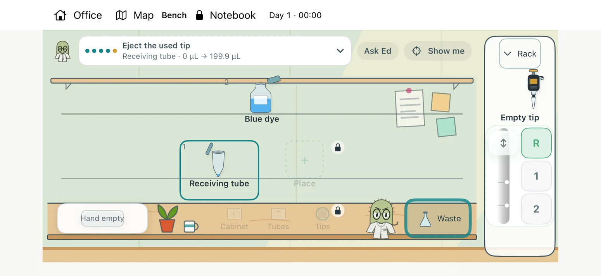
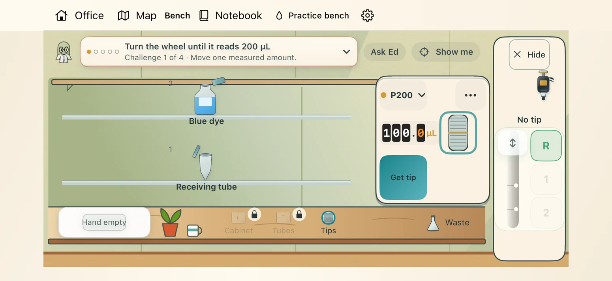
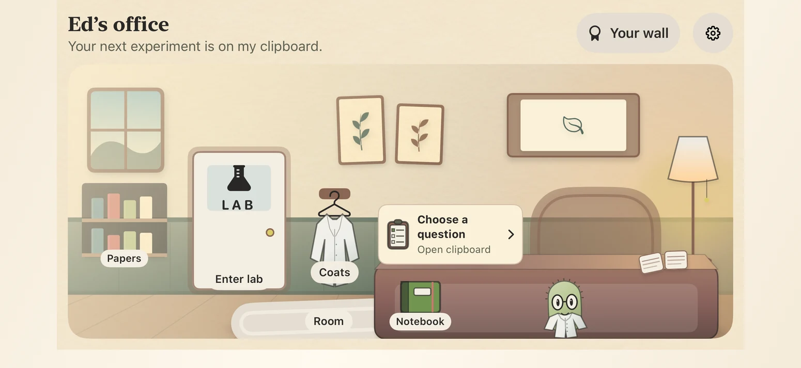
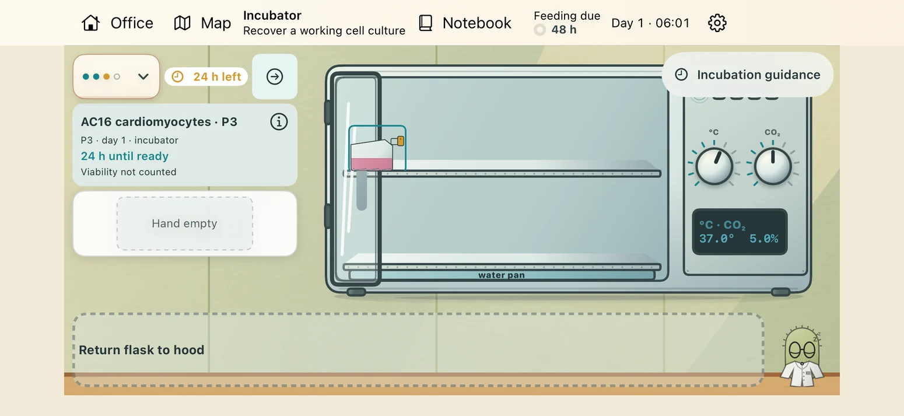
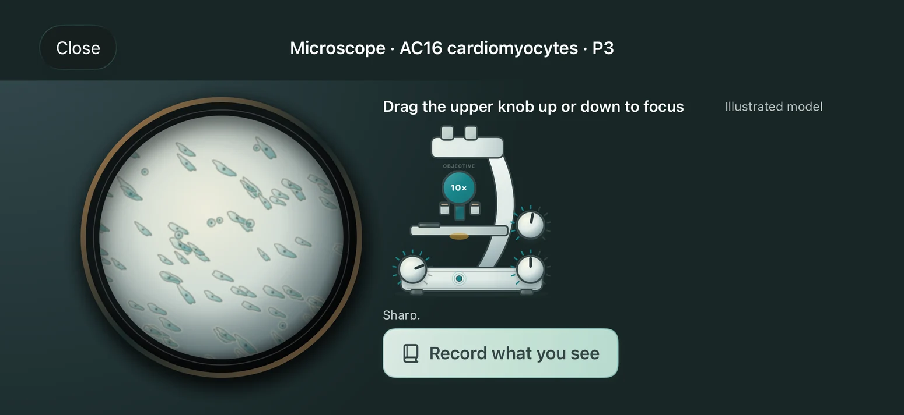
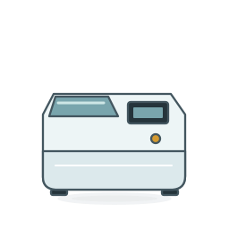
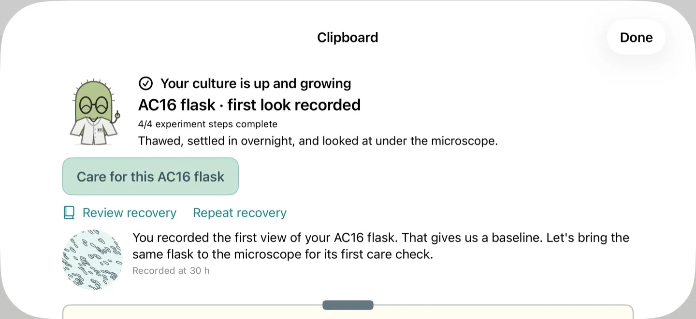

Molecular Biology is Hard
Pick up a pipette.
Your PI is E. coli.
A hands-on lab sim where careful technique becomes an experiment worth following. Learn the pipette with Ed, bring a culture back from frozen stock, and return to a lab that remembers your work.


At the bench
A little more precise every time.
Set a volume, fit a fresh tip, and work the plunger to draw liquid into the tip and deliver it to a tube. Then see how closely you can repeat the same transfer.
Ed’s four P200 lessons build from a single transfer to repeat transfers, serial dilutions, and standards, which are samples with known concentrations.


Ed’s office
Meet your
one-cell PI.

Ed has opinions about your technique. Fortunately, he is happy to explain them.
He runs the lab, and his office is where you start. Check his clipboard for your next experiment, then take what you’ve learned to the bench.


Your first experiment
Build a Working Culture.
You’ve learned to transfer tiny amounts. Now follow a living culture from a frozen vial to something you can observe, care for, and measure.
-

Bring a culture back.
Recover cells from frozen stock and put the flask in the incubator so they have a place to grow.
-

See what you grew.
Bring your cells into focus, record what you see, and return to care for the culture.
-

Turn a sample into evidence.
Take a sample from your culture and use a separate measurement to estimate how much protein it contains. The Notebook keeps your result and your interpretation together.


Your saved lab
Pick up where
you left off.
Your bench, specimens, and materials are there when you return. Open your Notebook to revisit a result and work out what it means.


Every experiment starts
with something small.
MBiH is a hands-on lab sim for iPhone and iPad.
Explore the lab